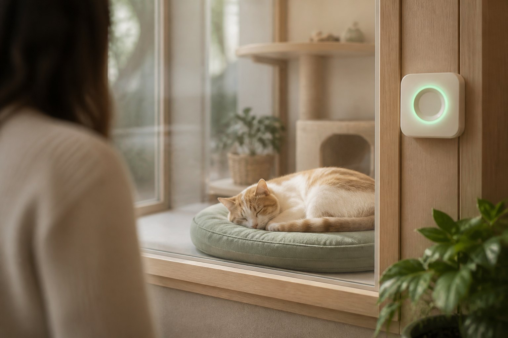

Precise prototype · Enclosure A-03
Live disturbance lab
One simulated second equals one minute in the rolling window. Qualified approaches need dwell. Walk-bys do not count. Staff can always override.
Simulated time in window00:00 / 30:00
Enclosure boundary
Sage band = 0.3–1.5 m ToF zone. Walk-past stays outside the dwell rule.

QUIET VIEWING
RESTGUARD
Score 0.0 · State Quiet viewing
Staff page · local only
No images. No waveform. Counts and minutes only.
P · approaches0
O · door opens0
A · sound min0.0
Sound exposure in the current window
D = 2P + 3O + 0.25A
D = 2(0) + 3(0) + 0.25(0) = 0.00
Rolling 30-minute window
Events age out. The ring should not flicker.
Green 0–10 · Amber from 11 · Rest above 20 or staff override · Return to green only below 8